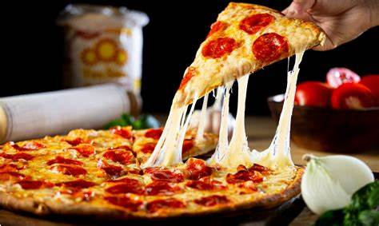

Pizza Recipe

Ingredients:
- 1 1/2 cups warm water
- 2 teaspoons active dry yeast
- 3 1/2 cups all-purpose flour
- 1 teaspoon salt
- 2 tablespoons olive oil
- Toppings:
- 1 cup pizza sauce
- 2 cups shredded mozzarella cheese
- 1 cup shredded cheddar cheese
-
Toppings of your choice (e.g. pepperoni, mushrooms, bell peppers,
onions, olives)
Instructions:
-
In a large mixing bowl, combine warm water and yeast. Let it sit for
5-10 minutes until yeast is activated.
-
Add flour, salt, and olive oil to the bowl. Mix until a dough forms.
-
Knead the dough for 5-10 minutes until it becomes smooth and elastic.
-
Place the dough in a greased bowl, cover it with a damp cloth, and let
it rise in a warm place for 1-2 hours.
- Preheat the oven to 425°F (220°C).
-
Punch down the dough and roll it out into a circle or rectangle shape.
-
Spread pizza sauce over the dough, leaving a small border around the
edges.
- Add shredded mozzarella and cheddar cheese.
- Add your desired toppings.
-
Bake the pizza in the preheated oven for 15-20 minutes, until the crust
is golden brown and the cheese is melted and bubbly.
-
Remove from the oven and let it cool for a few minutes before slicing
and serving.
Enjoy your delicious homemade Pizza!
Return to Top
Go to Home